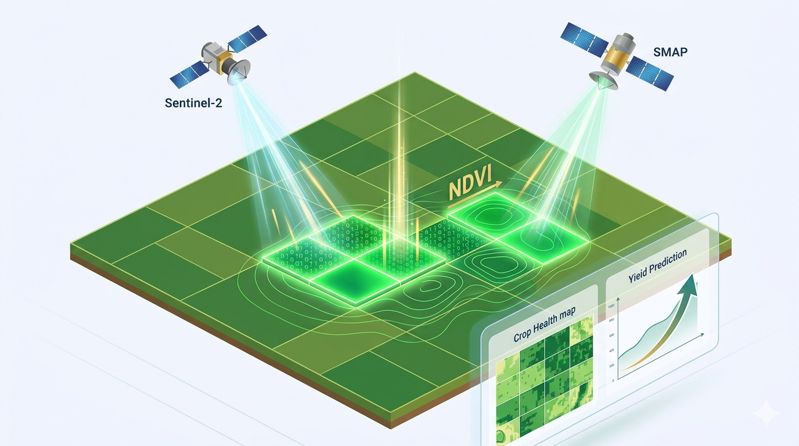
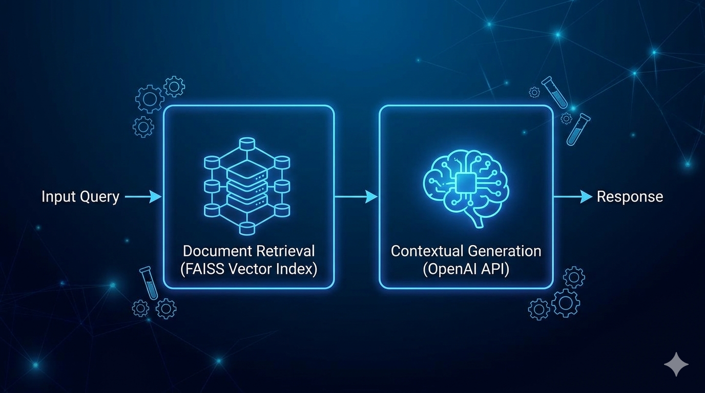
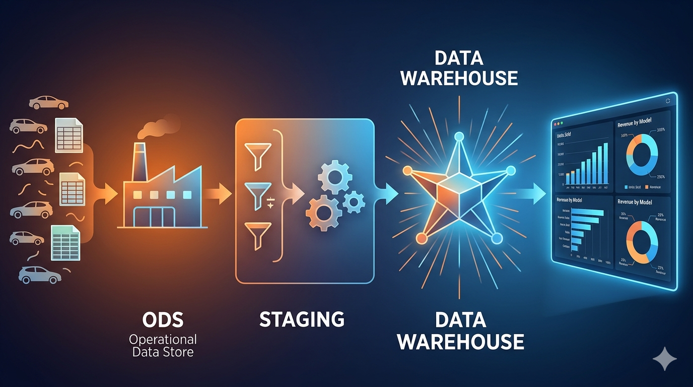
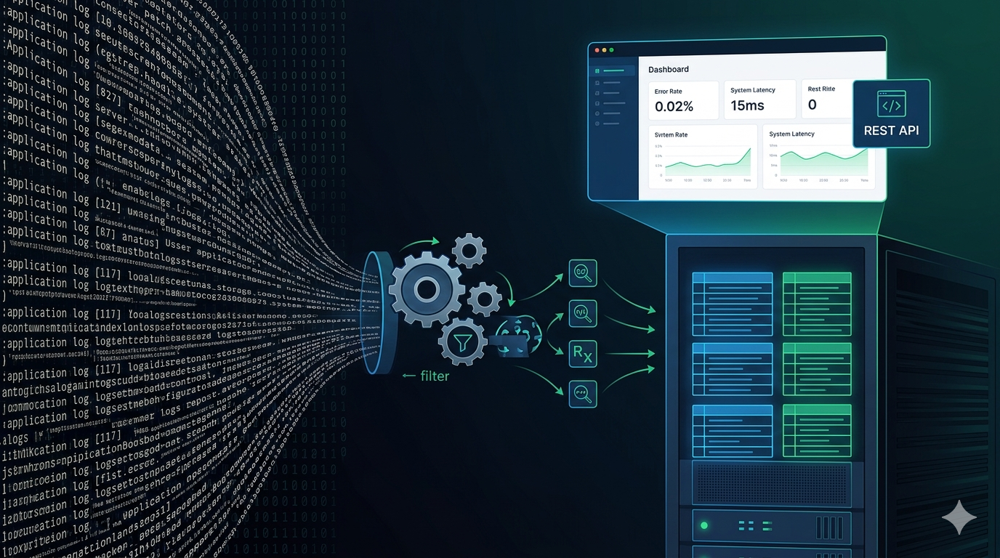
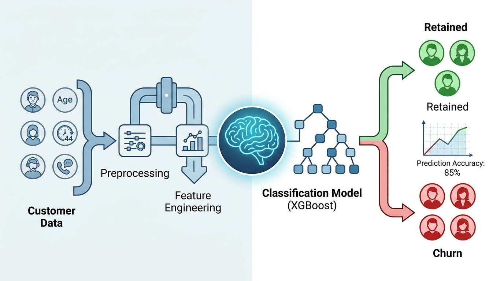
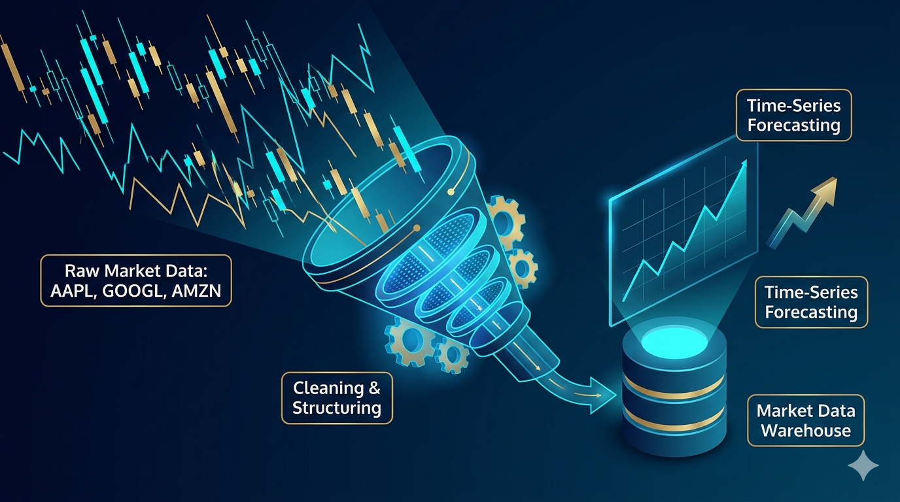
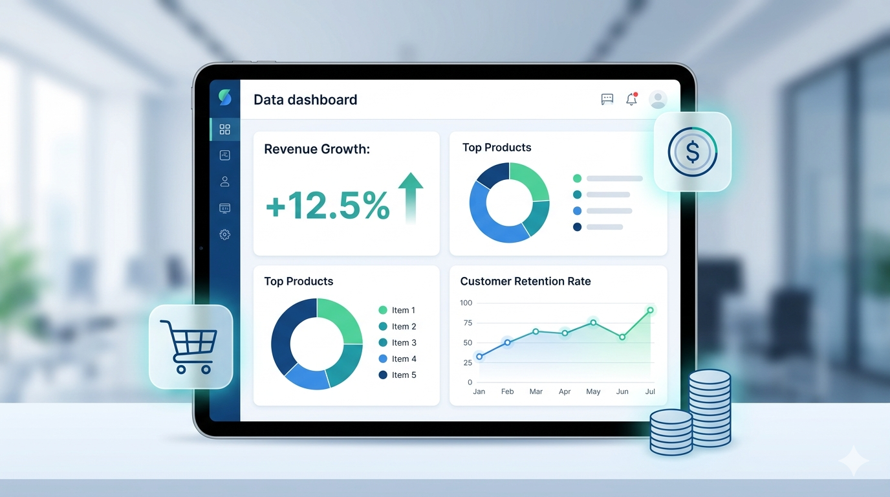
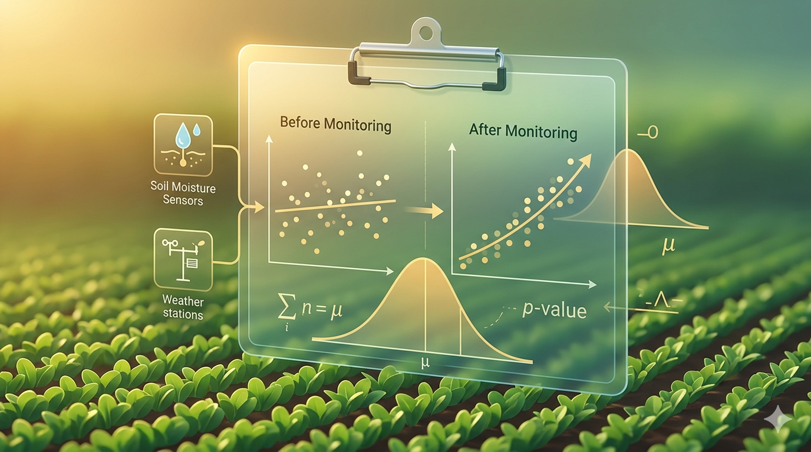
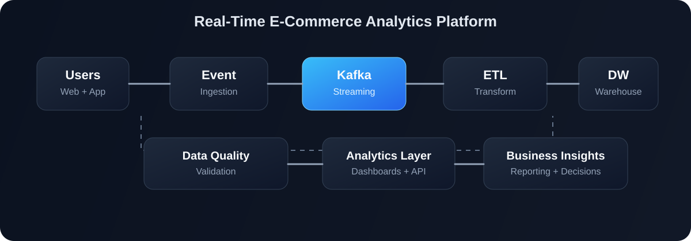
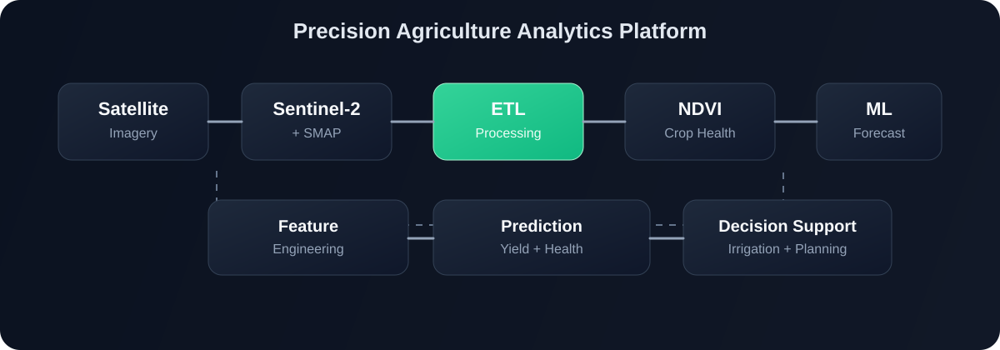

DATA SCIENCE UNDERGRADUATE
Aspiring Data Engineer and AI/ML Engineer with experience in ETL pipelines, machine learning workflows, cloud technologies, and analytics engineering.
I am a Data Science undergraduate passionate about designing scalable data systems, analytics platforms, and machine learning workflows. My interests include data engineering, cloud-based analytics, predictive modeling, and production-grade ETL pipelines. I specialize in building end-to-end data solutions that drive business insights and operational efficiency through data-driven decision making.
Python, SQL, Kotlin, Java, Shell Scripting, JavaScript
Airflow, Apache Spark, BigQuery, PostgreSQL, MySQL, Data Warehouse Design
Pandas, NumPy, Scikit-learn, XGBoost, TensorFlow, RAG Systems, Computer Vision
Google Cloud (GCP), AWS, Docker, Linux, GitHub, Kubernetes
Statistical Analysis, Hypothesis Testing, Data Quality Validation, Streamlit, Dashboarding
FastAPI, SQLAlchemy, FAISS, OpenAI, Sentiment Analysis, Jupyter Notebooks
Production-ready data platform handling real-time user activity and historical orders. Features data transformation, validation, warehouse architecture, and API exposure for analytics.
View Project →
Satellite-powered crop monitoring platform ingesting Sentinel-2 & NASA SMAP data. Features ETL pipeline, NDVI calculation, and ML models for crop health and yield prediction.
View Project →
Retrieval-Augmented Generation system built with Python, FAISS, and OpenAI. Modular architecture designed for scalability, testability, and production deployment.
View Project →
Production-grade ETL data warehouse pipeline with 3-layer architecture (ODS → Staging → DW), dimensional star schema, data quality validation, and visual dashboards.
View Project →
Production-ready data engineering project ingesting raw application logs. Transforms logs into structured analytics tables and exposes metrics via REST API.
View Project →
Complete machine learning project predicting customer churn using classification algorithms. Includes data preprocessing, feature engineering, model training, and evaluation.
View Project →
Automated daily collection, cleaning, and storage of stock market data. Structured database design enabling easy analysis and time-series forecasting.
View Project →
Structured analytical reporting for retail transactional data. Monitors KPIs including revenue growth, customer retention, and product performance.
View Project →
Statistical analysis of farm monitoring impact using descriptive analytics, hypothesis testing, regression modeling, and predictive analysis.
View Project →Built an end-to-end data platform to collect, process, validate, and analyze real-time user activity together with historical order data. The solution provides a scalable foundation for operational, product, and customer analytics.
Retail businesses often struggle to combine real-time customer interactions with historical transactional data. Without a unified pipeline, teams cannot monitor conversion trends, customer behavior, or product performance in a timely and reliable way.
I designed a production-style analytics platform that ingests event and order data, validates quality, transforms it into analytical tables, and exposes the data through reporting endpoints for downstream dashboards and business users.

The pipeline includes data ingestion from multiple sources, transformation layers for structured data modeling, validation checks, and analytics-ready storage for reporting.
Python, SQL, Kafka, Airflow, PostgreSQL, Docker, FastAPI, Data Modeling, ETL/ELT
This project demonstrates a scalable, production-oriented approach to data engineering by combining real-time and historical data into a single analytics foundation. It highlights my ability to design reliable pipelines, enforce quality checks, and support business-facing reporting workflows.
Built a satellite-driven crop monitoring platform to process geospatial data and deliver actionable insights for crop health, yield forecasting, and resource optimization.
Farmers and agricultural decision-makers often lack timely visibility into crop health, irrigation needs, and yield risks. Traditional monitoring methods are slow, fragmented, and difficult to scale.
I designed a data pipeline that ingests satellite imagery and environmental data, computes vegetation indices, and applies machine learning models to estimate crop health and agricultural productivity.

The project combines geospatial data ingestion, transformation workflows, and machine learning analysis into a unified analytics pipeline for agricultural decision support.
Python, SQL, Pandas, NumPy, Scikit-learn, Remote Sensing Data, ETL Pipelines, ML Models
This project highlights my ability to work with large, complex data sources and turn them into meaningful insights for real-world operation and decision-making. It demonstrates a strong mix of data engineering, analytics, and applied machine learning.
Email: dhananjananadeekumari@gmail.com
GitHub: github.com/nadee2k